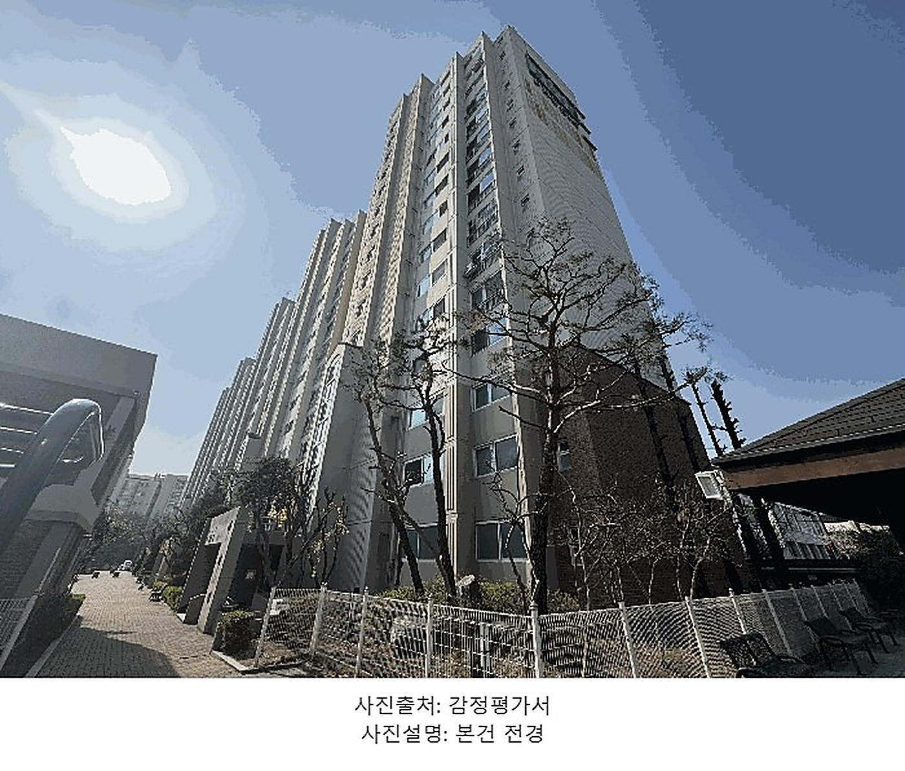
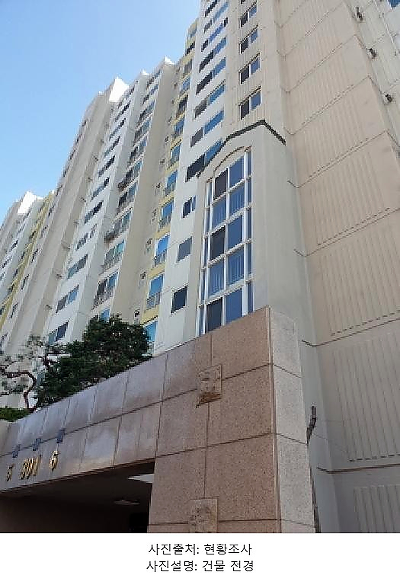
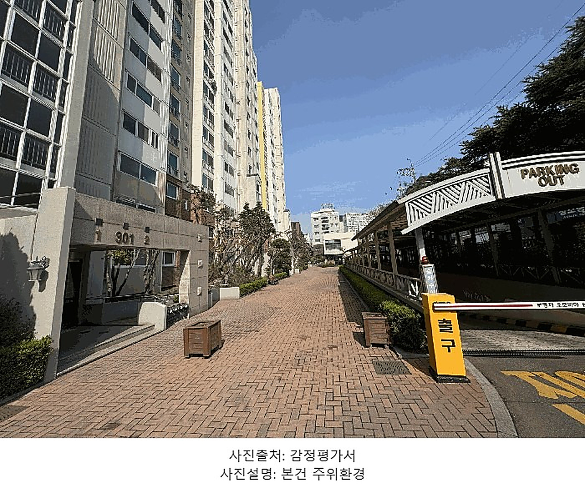
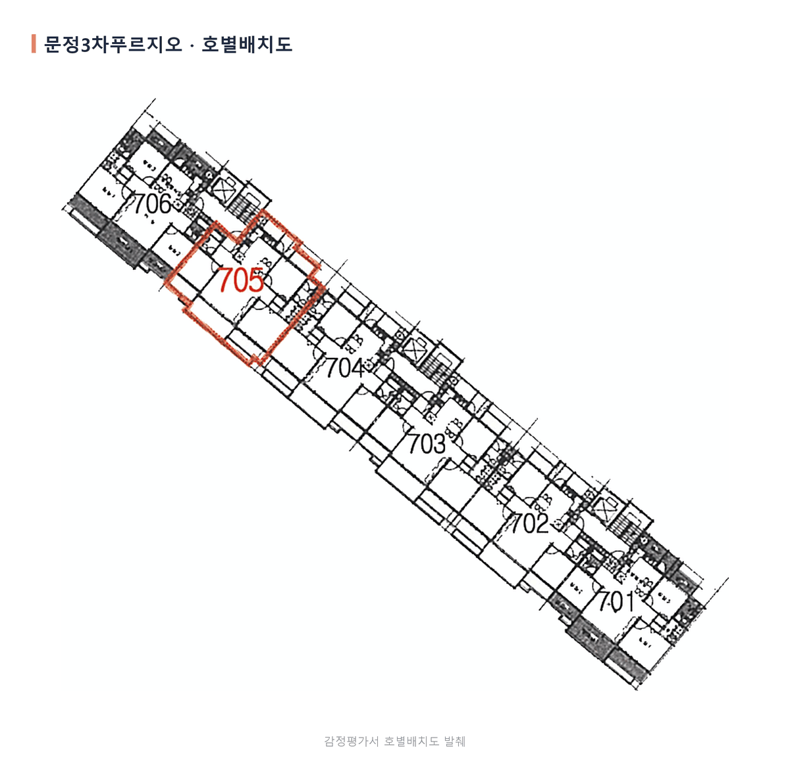
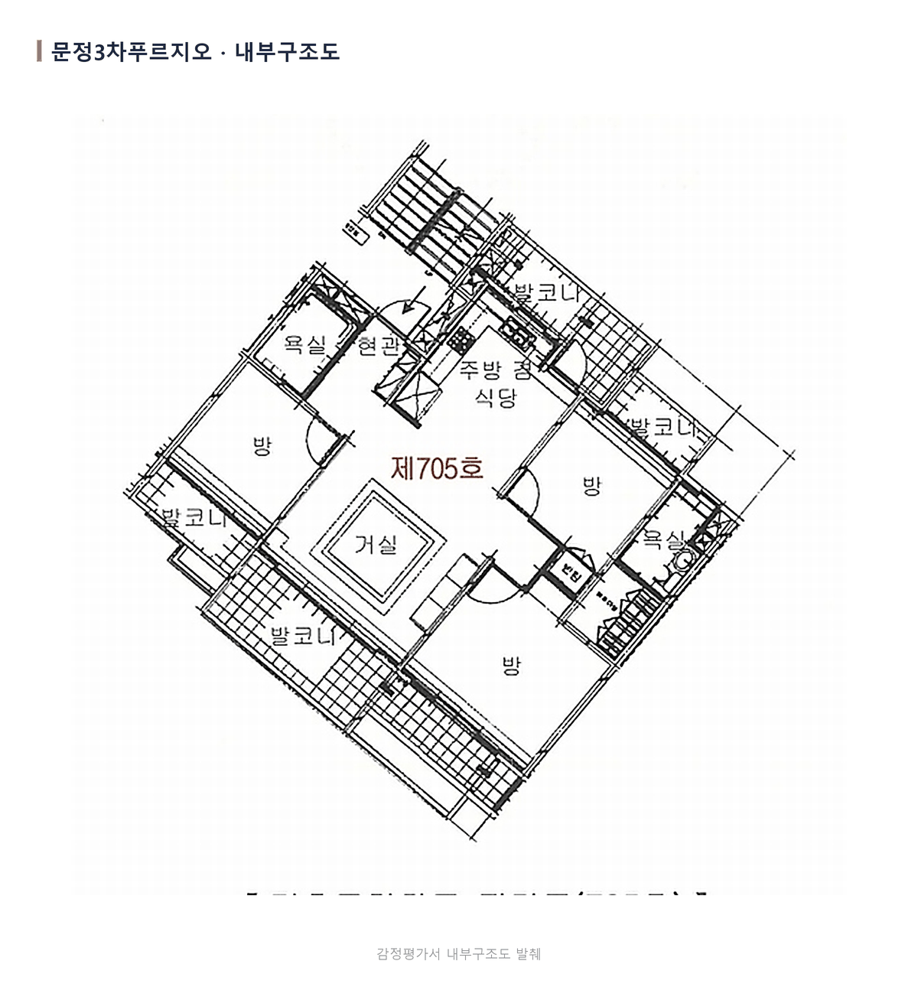
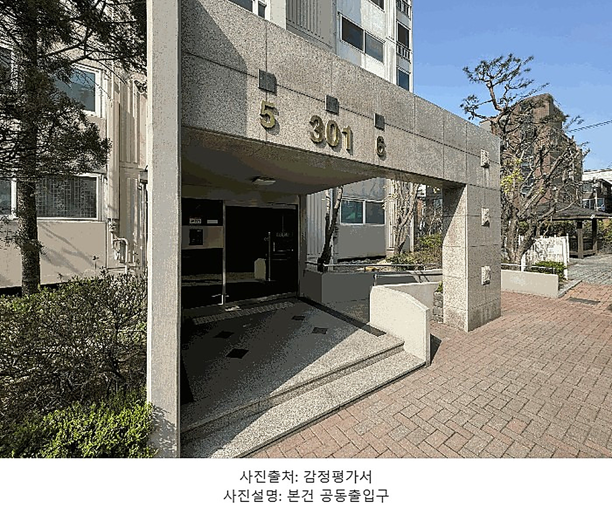
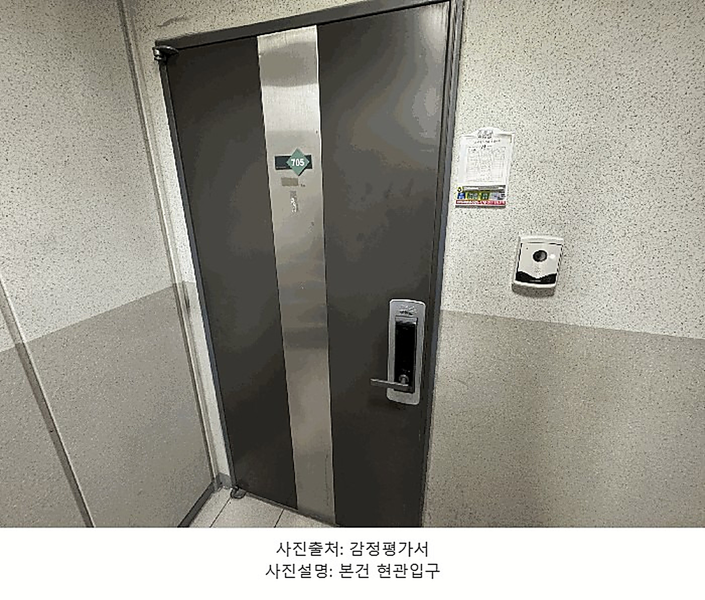
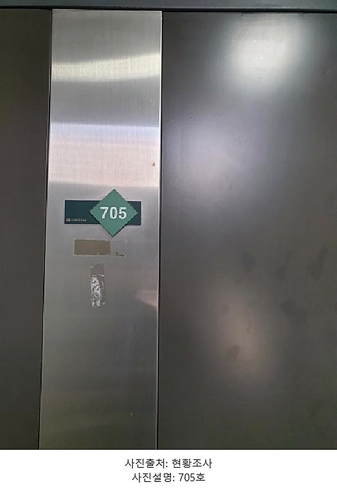

서울특별시 송파구 문정동 117 문정3차푸르지오아파트 301동 7층 705호
| 관할 | 서울동부지방법원 |
|---|---|
| 사건번호 | 2025타경51245 |
| 소재지 | 송파구 문정동 117 · 301동 705호 |
| 면적 | 전용 84.96㎡ (25.7평) · 대지권 31.38㎡ |
| 준공 | 2002년 8월 사용승인 |
| 감정가 | 11억 원 |
| 최저매각가 | 11억 원 (1차 · 감정가의 100%) |
| 입찰보증금 | 1억 1,000만 원 |
| 매각기일 | 2026년 8월 31일 |
[매니저 · 에디터에서 「일정」 삽입] 붙여넣기로는 안 들어갑니다. 에디터 일정 버튼 →
제목 문정3차푸르지오 / 일시 2026.08.31(월) 10:00~11:10 /
장소 서울동부지방법원(검색하면 지도 자동) / 설명 사건번호 2025타경51245.
🔴 입찰 시각은 우리 수집 데이터에 없어 같은 법원·같은 날짜 사건에서 가져왔습니다 — 법원 공고로 한 번 확인해 주세요.


전용면적 84.96㎡, 공급면적 기준 32평형입니다. 감정가와 최저매각가격이 둘 다 11억 원으로 같습니다. 아직 한 번도 유찰되지 않아 할인이 붙지 않은 회차라는 뜻입니다.
첫 회차는 가격이 가장 높은 대신 경쟁도 가장 적습니다. 유찰을 기다리면 가격은 내려가지만 그만큼 입찰자가 붙습니다. 이번 회차에서 판단할 것은 이 두 가지의 교환입니다.
단지는 장지동주민센터 북측에 자리하고, 지하철 8호선 문정역이 걸어서 닿는 거리입니다. 인근에 노선버스정류장이 있고, 주위는 아파트단지와 근린생활시설·학교가 섞인 주거지역입니다. 단지 남측으로 노폭 약 25m 도로가 지나고 나머지 세 면은 약 8m 도로에 접합니다.
[매니저 · 에디터에서 「장소」 삽입] 에디터 장소 버튼 → 문정3차푸르지오아파트 검색 → 선택하면 지도가 자동으로 붙습니다. (일정 카드의 지도는 입찰 법원, 이건 물건 단지 지도라 둘 다 들어갑니다.)

같은 층에 701호부터 706호까지 여섯 세대가 있고, 705호는 706호와 704호 사이에 자리합니다.

현관에서 들어서면 주방 겸 식당이 이어지고, 거실을 가운데 두고 방 셋이 나뉩니다. 욕실은 둘이고 발코니가 네 곳에 붙습니다.

말소기준권리는 2015년 10월 12일 국민은행(김포대곶지점) 근저당입니다. 그 뒤로 근저당 2건, 가압류 7건, 압류 3건이 접수돼 있습니다.
줄 수만 보면 많아 보이지만 말소기준보다 뒤에 온 등기는 매각으로 전부 소멸합니다. 등기부에서 낙찰자가 인수할 권리는 없습니다.
현황조사서의 점유관계는 채무자(소유자)점유로 기록돼 있습니다. 전입세대확인서에도 채무자 겸 소유자 세대만 등재돼 있습니다. 소유자가 사는 집에는 임차 점유가 겹치지 않습니다. 매각물건명세서에도 임차인 기재가 없어 인수할 보증금은 없습니다.
다만 집행관이 방문했을 때 폐문 상태여서 점유관계를 직접 확인하지는 못했다고 기록했습니다.



| 감정가 | 11억 원 |
|---|---|
| KB 하위평균가 | 13억 7,500만 원 |
| KB 일반평균가 | 14억 2,500만 원 |
| KB 상위평균가 | 15억 2,000만 원 |
| 매물 최저 호가 | 15억 2,000만 원 |
감정 시점과 지금 사이의 변동폭까지 얹어서 봐야 기준이 흔들리지 않습니다.
외관·배치·구조와 숫자를 순서대로 담았습니다.
[매니저 · 에디터에서 「동영상」 업로드] 이 영상 파일을 에디터의 동영상 버튼으로 올려 주세요. 파일은 이 폴더의 영상.mp4 입니다.
[매니저가 채울 한 줄] 현장에서 직접 확인한 것을 한 문장으로 적습니다. (예: 방문했을 때 관리사무소에서 미납 관리비가 없다고 확인했습니다) — 비워 두어도 대본은 나옵니다. 다만 이 한 줄이 사람 글과 AI 글을 가르는 가장 큰 신호라, 채우면 검색 평가에서 유리합니다(NO_EXP 감점 회피).
등기부등본에 새로 접수된 권리가 없는지, 매각물건명세서 비고란에 변동이 없는지, 그리고 관리사무소에 미납 관리비가 남았는지를 입찰일 직전에 다시 봅니다. 이 세 가지는 매각기일 사이에도 바뀝니다.
문정3차푸르지오 32평형, 이번 회차 물건분석이었습니다. 사건번호를 알려주시면 권리·점유·시세를 개별 조건에 맞춰 확인해 드립니다.
더핀부동산중개법인 · 대표번호 1668-1090 · 서울 강남구 선릉로93길 40, 611호
이 원고를 어떤 근거로 이렇게 짰는지 적어 둡니다. 보시고 피드백 주시면 다음 회차에 반영합니다.
먼저 만든 판(B안)은 린치핀 글 4편의 골격을 그대로 썼습니다. 원본과 대조해 보니 도입문("오늘 한번 권리분석 해보겠습니다"), 소제목 1. 사건 개요 / 2. 감정가 및 최저가 / 5. 경매 전 기본체크사항 / 6. 총평, 강조문구 "가장 중요한 것은 낙찰가", 마무리 블록 "입찰 전 체크포인트"가 사실상 동일했습니다. 네이버 콘텐츠 가이드가 금지하는 것은 복제만이 아니라 짜깁기까지입니다. 그래서 대표 원고 4편에서 측정된 우리 구조(주소 한 줄 → 기본현황표 → 자산이 뼈대)로 다시 짰습니다.
번호도 질문형도 쓰지 않았습니다. 근거 = 문체 정본 B-2(소제목이 글의 구성을 해설하면 안 된다)· B-10(명사+조사로 툭 던지지 않는다)·A-12(소제목 전부 의문형 금지). 처음 쓴 마무리 소제목 "여기까지가 물건분석입니다"는 그 규칙을 제가 어긴 것이라 대표 지적 후 걷어냈습니다.
킷은 사건개요·시세를 이미지 타일로 만듭니다. 그러면 감정가도 최저가도 검색에 한 글자도 안 걸립니다 (네이버 가이드 "중요한 정보를 이미지 안에만 담지 마세요"). 대표가 2026-08-24에 실제 에디터에서 붙여넣기가 표를 그대로 받는 것을 확인해 줘서, 숫자는 표로 냈습니다.
「일정」과 「장소」는 붙여넣기로 안 들어갑니다. 화면의 카드는 미리보기이고, 매니저가 에디터 버튼으로 넣어야 네이버가 지도를 그립니다. 두 지도는 서로 다른 것을 가리킵니다 — 일정 = 입찰 법원, 장소 = 물건 단지.